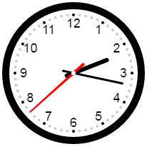

如效果图所示，暂且把钟表分成5部分

1.背景部分：外圆、数字、外圆与数字之间的点
2.时针
3.分针
4.秒针
5.中心的圆点，这个店之所以没有放在背景部分，是因为绘制完前面所有才绘制这个点，否则会被覆盖
1.弧度，绘制时会用到弧度，如绘制圆、时针转动等。一个圆形的弧度为2 * Math.PI，然后根据这个弧度来获得所需的弧度。
2.坐标系，坐标原点在canvas左上角，我们可以通过translate（平移）、rotate（旋转）来移动坐标系。
3.状态的保存与恢复，我们可以通过rotate旋转坐标系，以方便我们绘制时针等。在绘制前我们需要通过save()保存当前状态，绘制完成后通过restore()恢复之前的状态，好方便我们接下来的操作。
分别绘制5个部分。绘制外圆、点、时分秒针时会需要获取相应的弧度。圆弧度可以通过获得2 * Math.PI，时针弧度2 * Math.PI/12 * hour
知道弧度与半径就可以知道圆上的点的坐标，通过Math.cos()和Math.sin()获得。
通过Data()和定时器绘制动态的时钟。